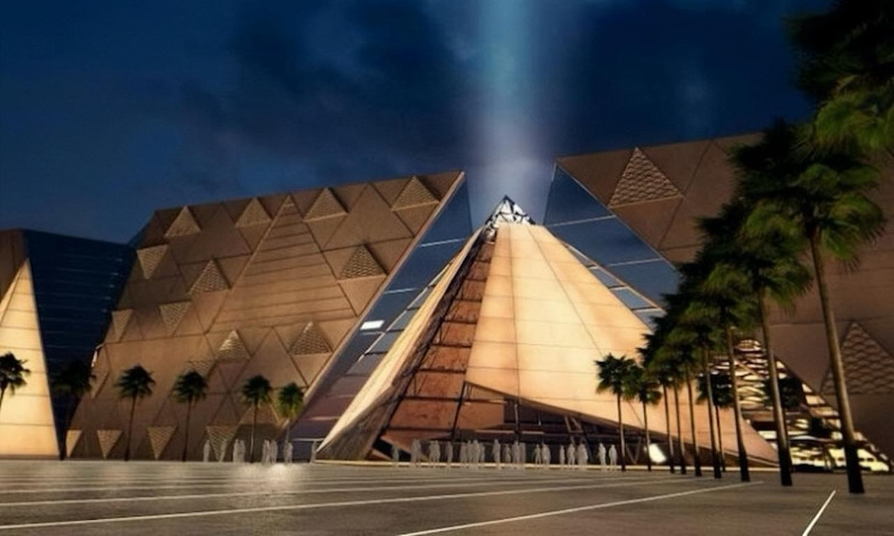
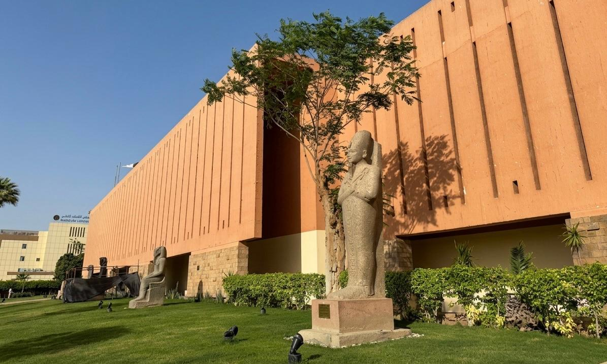
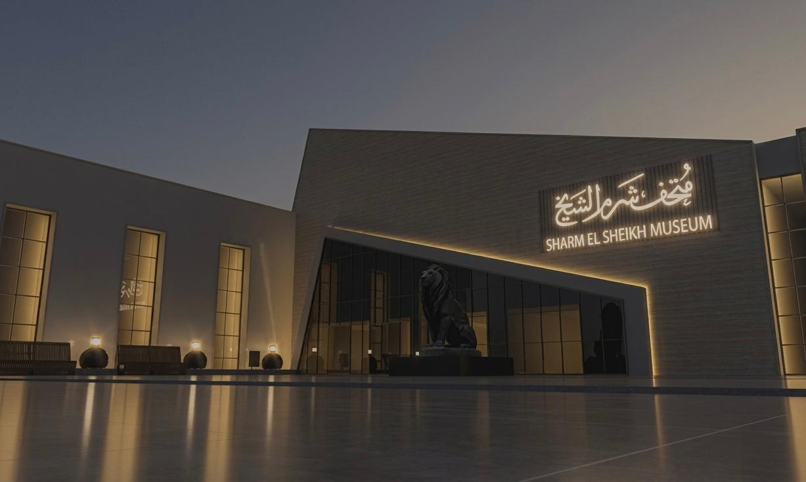
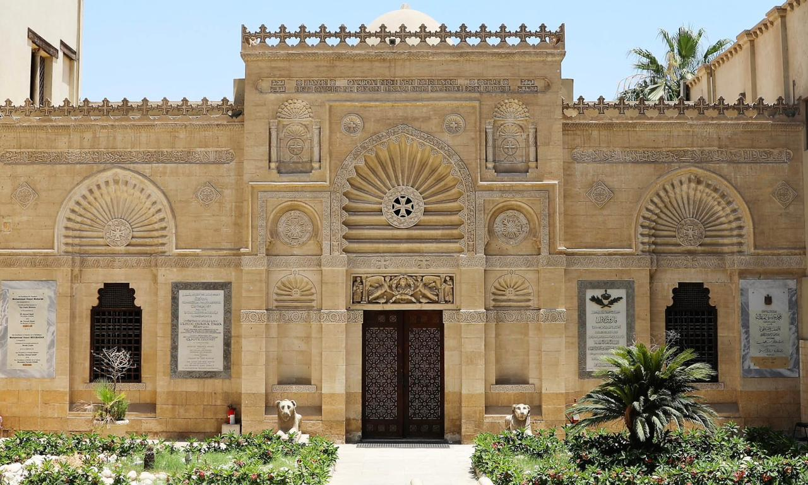
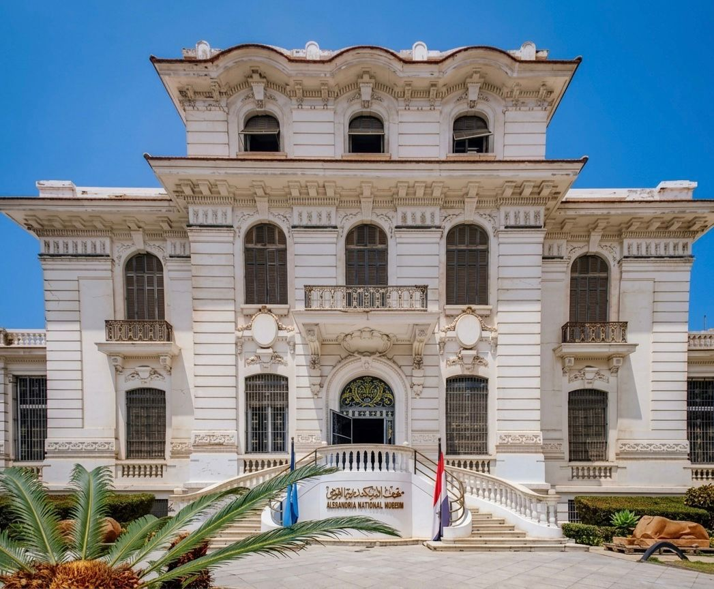
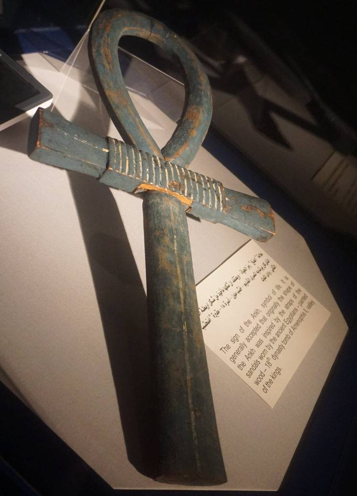
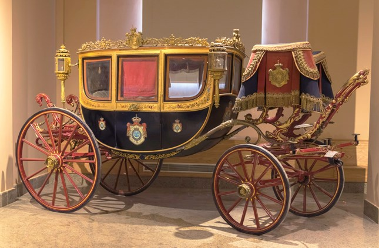

Heritage Icon
National Museum of Egyptian Civilization
A modern showcase of Egypt's living history, with royal artifacts and immersive exhibits.
View DetailsNavigate through iconic heritage destinations with crisp descriptions, easy access and a modern layout designed for travelers and culture seekers.
Back to Home
A modern showcase of Egypt's living history, with royal artifacts and immersive exhibits.
View Details
The iconic new museum on the Giza plateau, home to Tutankhamun's golden collection and immersive ancient displays.
View Details
A riverside museum featuring Theban artifacts from the New Kingdom, with a calm, elegant display of ancient kings.
View Details
South Sinai museum presenting ancient Egyptian civilization and unique heritage.
View Details
Historic Cairo museum near Tahrir Square, home to one of the world’s richest collections of Pharaonic treasures.
View Details
Largest Islamic art museum in the world, presenting treasures from Egypt, the Arabian Peninsula, Andalusia and beyond.
View Details
Unique collection of Coptic manuscripts, icons, woodwork and ancient religious art housed in Old Cairo.
View Details
Modern museum in Alexandria displaying ancient artifacts, royal statues and the city’s Mediterranean heritage.
View Details
A unique museum in Luxor entirely dedicated to the art of ancient Egyptian mummification.
View Details
A rare and luxurious museum in Cairo showcasing the majestic royal carriages, golden chariots, and historical equestrian gear used by the Muhammad Ali Dynasty.
View Details
A spectacular royal palace museum in Manial, Cairo, blending Islamic, Ottoman, and Moorish architectural styles with lavish gardens and opulent historic halls.
View Details
A magnificent historical museum in Alexandria housing a massive collection of rare artifacts, statues, and coins that trace Egypt's classical age.
View Details